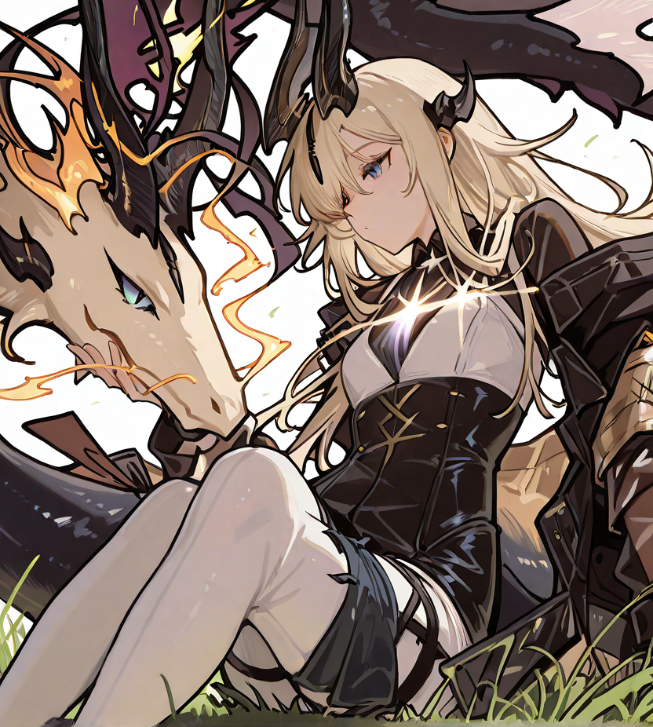
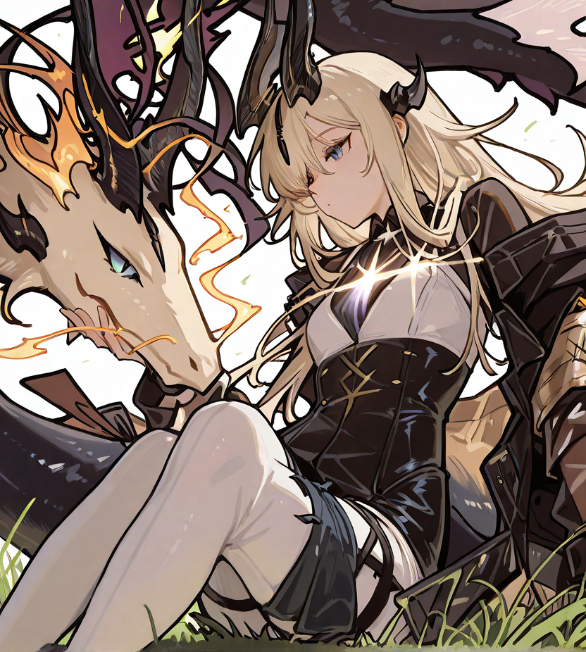

Identité
╭──༺☆༻
Nom : Issue des lignées draconiques les plus vénérables, dont les échos résonnent encore dans les légendes oubliées, elle incarne l'héritage millénaire des Vicop — une dynastie dont le seul nom évoquait la terreur et le respect à travers les royaumes.
Prénom : Baptisée Lyca dans les flammes sacrées de sa naissance, elle s'est forgé une réputation sous l'épithète maudite de "Red Burn". Chaque champ de bataille qu'elle abandonne porte les cicatrices ardentes de son courroux, brasiers éternels qui témoignent de son passage destructeur.
Âge : 474 années ont marqué son existence depuis qu'elle a ouvert les yeux sur ce monde — l'équivalent de 22 ans… draconiques. Un âge où la puissance atteint son apogée, où chaque souffle devient une arme, où chaque battement d'ailes fait trembler les cieux.
Sexe : Incarnation de la féminité draconique dans toute sa splendeur mortelle.
Orientation Sexuelle : Son cœur de braise ne s'embrase que pour la beauté féminine.
Race : Dragonne, héritière des flammes primordiales qui ont forgé les montagnes et consumé les premiers royaumes.
Classe : Duelliste, maîtresse absolue de l'art du combat singulier où chaque affrontement devient une danse mortelle.
Sous-classe : Assassin, sculptant la mort avec la précision d'une artiste, transformant chaque meurtre en chef-d'œuvre de violence.
╰──༺☆༻
Compétences


 
